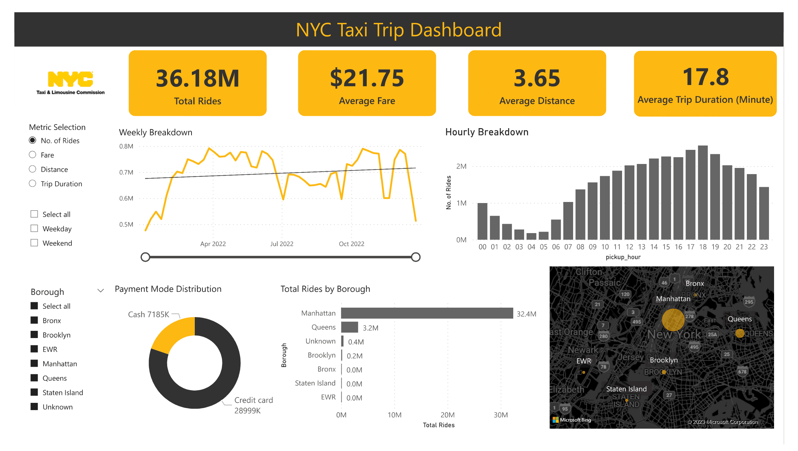
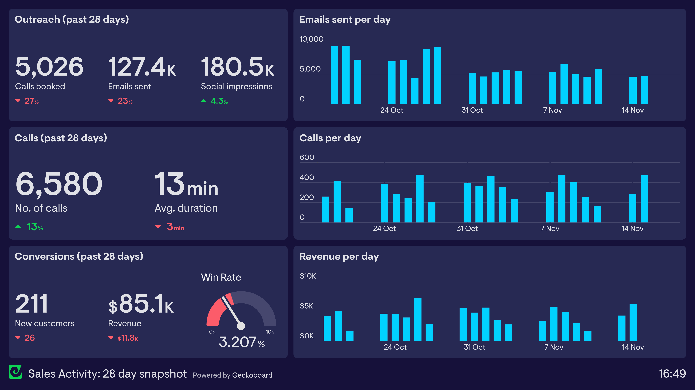

03. Things I've Built

Featured Project
NYC Taxi Fare Analysis
Statistical analysis of NYC taxi fares to determine the relationship between payment methods and fare amounts. Performed A/B testing and linear regression on 6 months of trip data, discovering that card-paying customers generate 69¢ more per minute. Results show R² = 0.76, proving strong correlation between trip duration and fare, with actionable recommendations for revenue optimization.
- Python
- Pandas
- NumPy
- Scikit-learn
- Statistical Testing
- Linear Regression

Featured Project
AtliQ Sales Dashboard
Enterprise BI solution replacing Excel-based reporting for AtliQ Hardware's multi-regional operations. Built MySQL-connected Tableau dashboard tracking revenue trends, top products, and regional performance in real-time. Reduced report generation from hours to seconds, enabling data-driven decision-making for Sales Director managing India-wide operations.
- Tableau
- MySQL
- SQL
- Dashboard Design
- KPI Tracking
- ETL

Featured Project
COVID-19 India Analysis
Comprehensive pandemic impact analysis across Indian states using Python and Tableau. Performed EDA, correlation analysis, and ratio calculations on state-wise data. Created interactive dashboards with scatter plots, mortality rates, and geographic visualizations using Mapbox, revealing recovery patterns and state-wise health response effectiveness.
- Python
- Tableau
- Pandas
- Statistical Analysis
- Mapbox
- EDA
Other Noteworthy Projects
Food & Beverages Sales Dashboard
Power BI dashboard analyzing F&B sales with revenue tracking, order trends, and performance metrics. Features interactive slicers, DAX measures, and tree maps for channel/manager/product analysis.
- Power BI
- DAX
- Excel
CryptoSnap - Password Steganography
Flask web app generating secure passwords and embedding them in pixel art using LSB steganography. Features cryptographically secure generation, image extraction, and modern responsive UI.
- Flask
- Python
- Pillow
- Steganography
Hotel Booking Cancellation Predictor
ML classification pipeline predicting booking cancellations from 119K records. Built Random Forest model with feature engineering, achieving interpretable results through feature importance analysis and business insights.
- Python
- Scikit-learn
- Random Forest